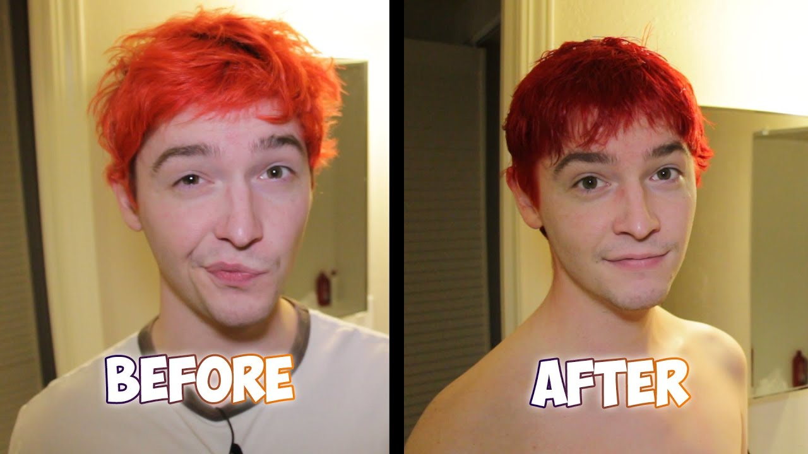
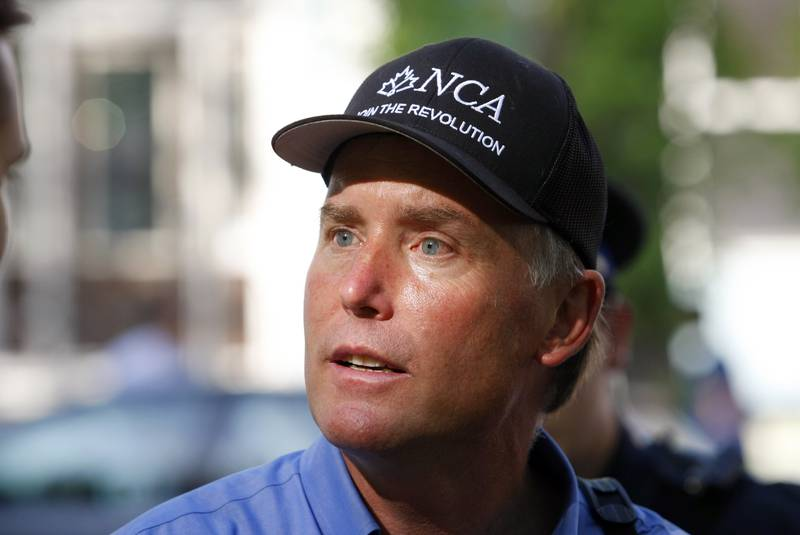
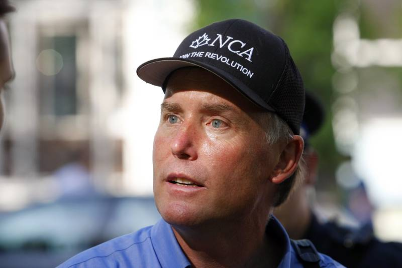
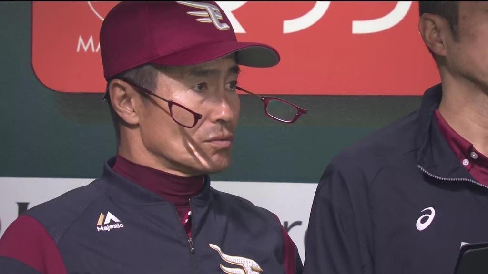
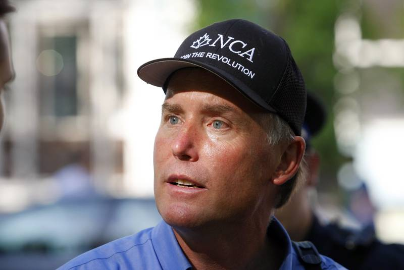

NCA Raid: The Second
May 7th, 2021
After my first experience with an NCA meeting, required reading in my opinion, I decided to get the goys on TRS actively involved in a second one. Our goal wasn't so much to outright take over the party. More just to have some fun, see what would happen, and get something going. I outright stated that the value of the party was purely in the non-weirdos who were in the party, so with that in mind my personal goal was just to get in the FB group and strip away anyone who wasn't a complete weirdo faggot.
With that in mind, I sent out a call to arms for our goyim.
TDC_ARTICLE_START
You may remember my interactions with the NCA from my previous post last weekend. You can read that here. The TL:DR: I got myself onto the Jitsu meeting of a small federal political party in Canada, and proceeded to basically just talk about our issues for 2+ hours while bullying the actual party leader.
Anyway, we've got another meeting coming for Thursday, April 22nd, at 5PM PST, or 8PM EST. And guess what goyim, you're all invited! What I want is a show of force here. I want every single fucking leaf on this forum to be in that call with me, amplifying everything that I say, and contributing. If you're Canadian and you want to get involved in politics, the time is now. Worst comes to worst, you spend 5 minutes on the meeting and then say adios. Either way, it's gonna be an experience.
I really can't stress this enough. I believe Kent suggested that we bully them and take over the party. I've suggested that we bully them and strip the normal people away and into our own party. Either way, it really doesn't matter, the first step is you bros all coming in this chat with me.
BTW, all you goys are welcome in, not just the Leafs, it's just that if you're a leaf, you need a goddamn excuse not to be here.
Please comment in this thread if you can make it, so I can know roughly how many people we're going to have showing up.
TDC_ARTICLE_STOP
After some back and forth, I got about 4 goys confirmed for attending. You know who you are. At 7pm PST, the meeting started. Luckily, we had about 8 goys in there, more than confirmed.
Initially, it was quite boring, but then we got this "clockwork orange motherfucker," as one of our goys put it on the forum later. Some guy who showed up with dyed orange hair in front of a big English Union Jack Flag. The juxtaposition was quite interesting, but to make it more intriguing, he kept talking with no volume. And we kept telling him he was muted, and he kept just flat out talking while muted.
Not him, but same energy
I mentioned to everybody how ridiculous it was to have security problems to the point where anyone can come in a chat, possibly an antifa member even, which this guy definitely looked like. He did the leave then come back thing, this time with the username "Rio", and his volume was working. When I asked him what brought him to the party he told me flat out that he wanted more free speech. When I asked him what he meant by that, he said flat out.
TDC_ARTICLE_START
Well I think that if people want to criticize Scientology then they should be able to.
TDC_ARTICLE_STOP
 FINALLY SOMEONE GETS IT! I am so sick and tired of those hook nosed scientologists in hollywood. Fucking beady eyed banker scientologists who think they have a right to control what we say. Thank god for orange hair for finally sticking up for us.
More conversation, and BTW this guy talked in a super gay way with lots of "like" and "uhm"s mixed in, revealed him to be in fact an actual gay, with some YouTube channels espousing Milo Yiannopolous tier shit to an audience of about 50 views per. That's not the problem, the problem is this guy being allowed in the party at all.
Anyway, moving forward we get to the really boring part of the meeting, where this guy named Philip went full autism on some esoteric gun control laws. It was not very interesting, and avoided the crucial issue of gun control, which is that the very same Antifa/BLMers who LARP like they hate cops, want the cops to be completely armed, and us to be completely disarmed. Globo Homo Schlomo wants us to be disarmed and the cops to be armed, because they want us to be helpless against their Blue Antifa.
After about an hour of this, with the only good moments us talking about the ADL and other shit like that in the text chat on the side, we got to the great part of this event when Stephen Garvey, NCA Leader, left for good. At that point, without the weirdo Cuckservative in the room, us goys got unfettered access to the people in the movement itself.

FINALLY SOMEONE GETS IT! I am so sick and tired of those hook nosed scientologists in hollywood. Fucking beady eyed banker scientologists who think they have a right to control what we say. Thank god for orange hair for finally sticking up for us.
More conversation, and BTW this guy talked in a super gay way with lots of "like" and "uhm"s mixed in, revealed him to be in fact an actual gay, with some YouTube channels espousing Milo Yiannopolous tier shit to an audience of about 50 views per. That's not the problem, the problem is this guy being allowed in the party at all.
Anyway, moving forward we get to the really boring part of the meeting, where this guy named Philip went full autism on some esoteric gun control laws. It was not very interesting, and avoided the crucial issue of gun control, which is that the very same Antifa/BLMers who LARP like they hate cops, want the cops to be completely armed, and us to be completely disarmed. Globo Homo Schlomo wants us to be disarmed and the cops to be armed, because they want us to be helpless against their Blue Antifa.
After about an hour of this, with the only good moments us talking about the ADL and other shit like that in the text chat on the side, we got to the great part of this event when Stephen Garvey, NCA Leader, left for good. At that point, without the weirdo Cuckservative in the room, us goys got unfettered access to the people in the movement itself.
Stephen Garvey
At this point Phillip started going on about his experiences being the nurse for some Abos in Northern Manitoba. Oh my fucking god, this shit was so damn good. Highlights include:
- Rape gangs out in the woods at night that screech loudly.
- A cooked baby. (No really)
- Gigantic Forest Fires (As Rayshard Spearchucker said, "sounds like baby cooking weather")
Little backstory on the cooked baby bit. So the babies parents were alcoholics, so they gave the baby to the grandparents. But they were alcoholics as well, so they gave the baby to the great-grandparents, who were less alcoholics. However, one night when the not-as-much-alcoholic great-grandparents were drinking heavily, they let the baby rest by the fire. Through pure coincidence, a doctor was scheduled to visit them the next day, and noticed the baby, which was cooked.
Yes that's right, the baby was cooked.

But maybe less entertainingly, but more usefully, Philip even brought up a pet issue of mine, which is getting oil companies/mining companies to pay money directly to the people, emulating what Middle Eastern Countries do. A great policy of course, and this shows that when the goyim are removed from supervision, then take a look at what they want, they don't come up with (((Weirdo Stuff))) that doesn't go anywhere, they come up with good policies.
Another encouraging thing was Jean-Phillipe, or something like that. He was definitely our-goy adjacent, although not all the way. Another goy, Roscoe Godfrey, chimed in and was great, and he wanted to get to a meetup of our goys. It was really great stuff.
So thanks to all those of our goys who showed up and chimed in. Kent Kershaw was definitely the best, and it provides so much social proof when there's one other strong voiced goy in there ready to back me up. Rayshard Spearchucker, Donald, Peter Kent, and all the others. They know who they are.
And the best part is we're doing it all again next Thursday.

FINALLY SOMEONE GETS IT! I am so sick and tired of those hook nosed scientologists in hollywood. Fucking beady eyed banker scientologists who think they have a right to control what we say. Thank god for orange hair for finally sticking up for us.
More conversation, and BTW this guy talked in a super gay way with lots of "like" and "uhm"s mixed in, revealed him to be in fact an actual gay, with some YouTube channels espousing Milo Yiannopolous tier shit to an audience of about 50 views per. That's not the problem, the problem is this guy being allowed in the party at all.
Anyway, moving forward we get to the really boring part of the meeting, where this guy named Philip went full autism on some esoteric gun control laws. It was not very interesting, and avoided the crucial issue of gun control, which is that the very same Antifa/BLMers who LARP like they hate cops, want the cops to be completely armed, and us to be completely disarmed. Globo Homo Schlomo wants us to be disarmed and the cops to be armed, because they want us to be helpless against their Blue Antifa.
After about an hour of this, with the only good moments us talking about the ADL and other shit like that in the text chat on the side, we got to the great part of this event when Stephen Garvey, NCA Leader, left for good. At that point, without the weirdo Cuckservative in the room, us goys got unfettered access to the people in the movement itself.
